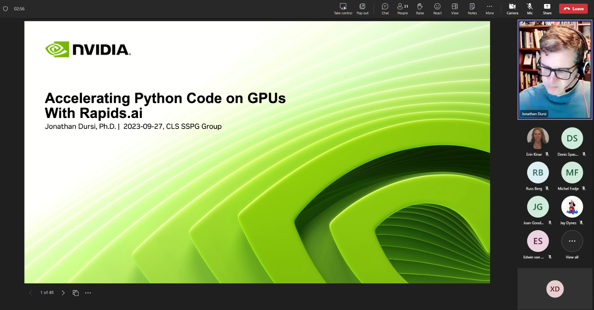
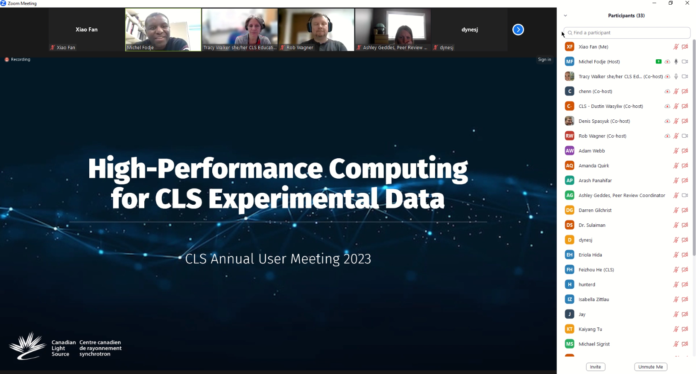
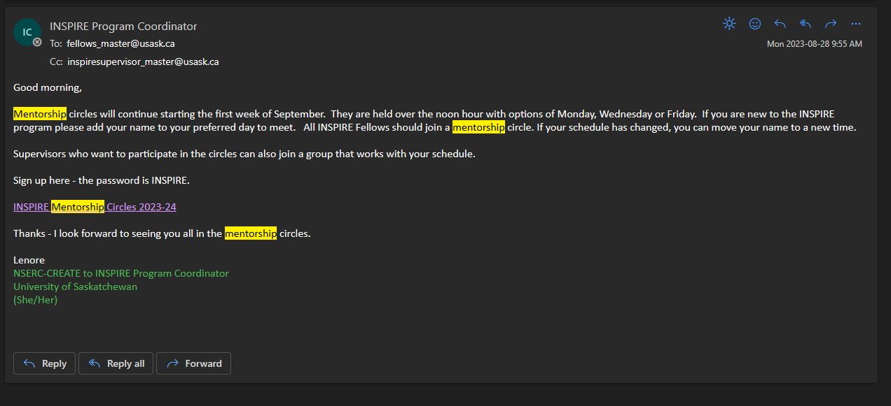
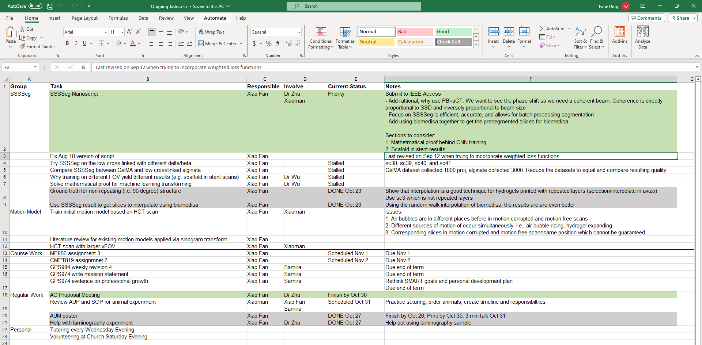
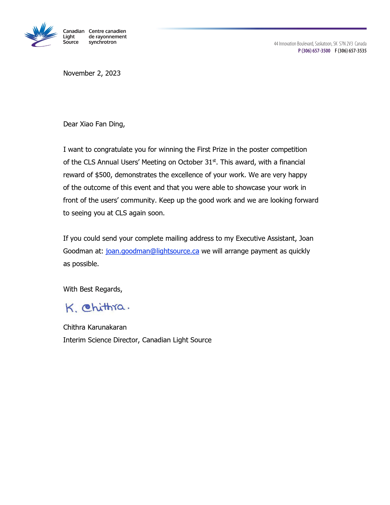
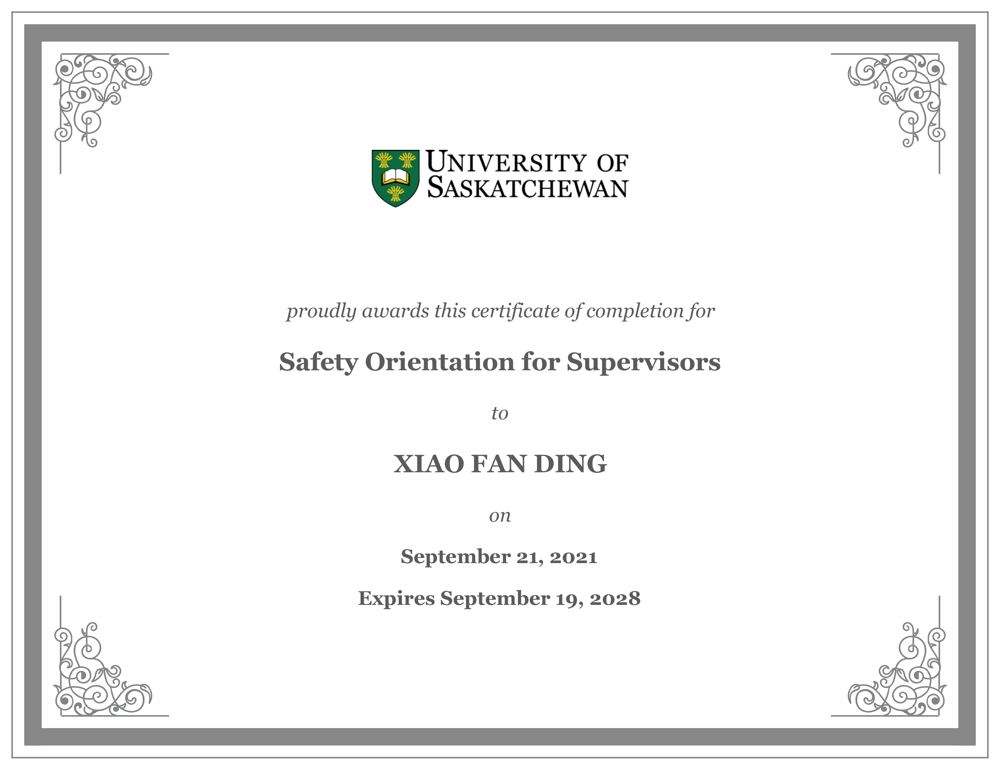
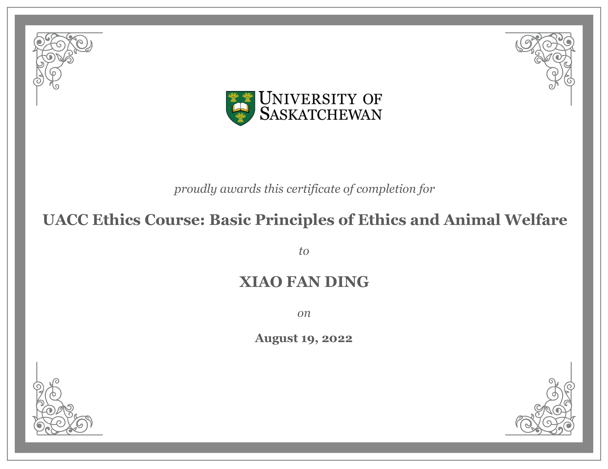
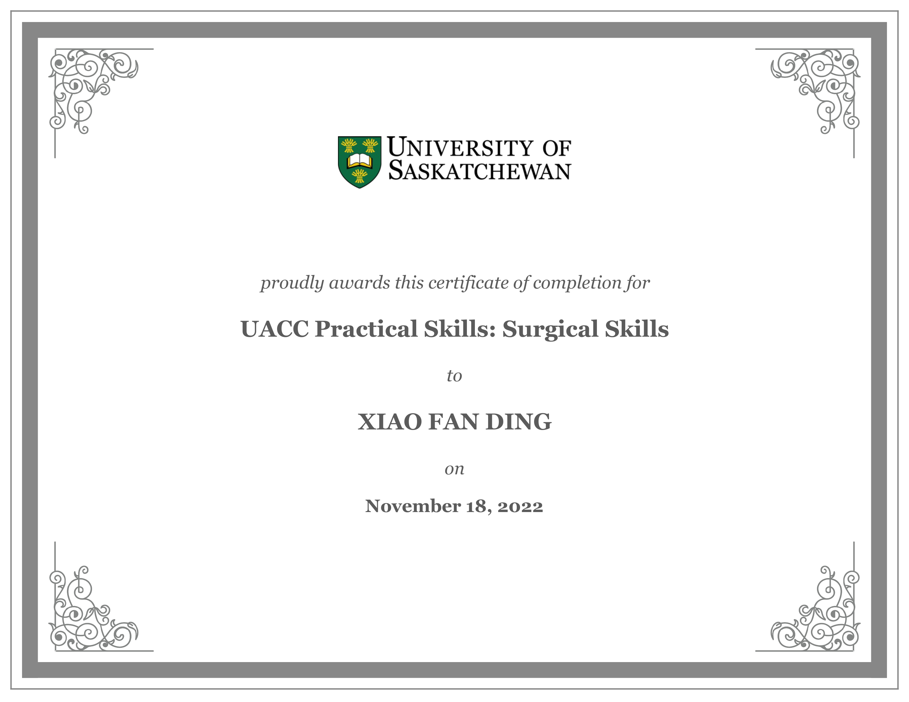

Goal 1: Enhance my scientific communication skills
"Over this academic term, I aim to enhance my research presentation skills by actively participating in some upcoming conferences and meetings. My improvement will be measured by the number of attendees I successfully engage with at each event. Post-conference reflections and feedback will be used to continuously refine my presentation abilities, transforming initial fears of criticism into constructive interactions essential for my professional growth."
Specific: During this term, I want to improve my ability to present one of my research projects. I have some data collected earlier in May and August and have a manuscript draft completed. There are several conferences and meetings this semester where I can practice and present my research.
Measurable: My progress will be tracked by counting the number of attendees I engage with and introduce my research to at each conference.
Achievable: I will showcase my research project via poster presentations at three conferences: the Biofabrication conference in September, Canadian Light Source Annual User Meeting in October, and the INSPIRE Workshop in December. These conferences are designed to foster graduate students’ communication abilities. After each conference, I will reflect on feedback and refine my presentations.
Relevant: I remember at my first conference; I was so terribly afraid of criticism that I watched from afar as others walked by and glanced at my poster. I now know that engagement and feedback is critical for improving my work.
Time-bound: I aim to present at these conference presentations over the next 3 months to improve my scientific communication.
1. How will you develop the knowledge you need to meet your goals? I can attend webinars/workshops and read on how to communicate science. I can look into communicating at different levels i.e., teaching in a classroom setting or at academic conferences. There are often departmental conferences aimed at developing graduate student communication skills that are open to everyone. Some may be outside of my research area, but communication skills are transferable.
2. How will you practice the skills you need to meet your goals? I can practice these skills by conducting mock poster presentations to colleagues or friends before the actual conferences. Since I am part of a multidisciplinary group, there are many colleagues whose area of expertise differs from mine and those from completely different departments. I can practice explaining my research on different levels of base knowledge.
3. How will you ask for feedback about your progress, and from whom? After each mock presentation, I can ask for feedback on clarity, engagement, and effectiveness. After each conference presentation, I can ask attendees for their thoughts on your presentation style and content.
4. What evidence do you expect to collect of your learning and skill? I can record feedback received after each presentation and maintain a journal of lessons learned and areas of improvement after each conference.
Communication is an integral aspect of both academia and the professional world. This semester, I set a goal to improve my research presentation skills which evolved to improving my communication skills in general. This journey led me to actively participate in several conferences and meetings. Through these engagements, I actively sought and incorporated feedback from my peers, enriching my learning experience.
Some of my activities included giving an oral presentation at the International Biofabrication Conference. Additionally, I presented a poster at the Canadian Light Source Annual Users’ Meeting, where I was received the first-place award in the poster presentation session. These experiences not only allowed me to practice and test my skills, but also offered a platform for self-assessment. Looking ahead, I look towards more opportunities such as the INSPIRE program workshop and my advisory committee meeting scheduled in December. These events will provide further avenues for applying and refining my communication skills. In my interactions, I took the time and sought feedback, focusing on areas of improvement in my communication techniques. This process has been a crucial part of my development.
A part of achieving my learning goal was reading "Tomorrow's Professor" by Richard Reiss. The book offered various strategies for effectively communicating scientific concepts, not just in a teacher-student situation but across different educational backgrounds/understanding levels. This perspective was enlightening and broadened my approach to academic communication. Furthermore, I completed a Linkedin Learning course on communication fundamentals. The course introduced me to the Think, Feel, Do model and effective message crafting techniques, which have been important in improving how I write emails and communicate with administrators. Additionally, participating in monthly mentorship circles with graduate students from diverse research areas, as well as attending group meetings within my research group, provided a collaborative environment to discuss and refine our research approaches. It is also a platform for collaboration which involves communicating how my skills/capabilities fit in to others’ projects.
These educational resources and experiences have manifested in real improvement in my public speaking abilities, interpersonal skills, and professional relationships. As a graduate student who is most likely to transition towards the workplace, I realize the immense value these skills hold.
In conclusion, this semester has been an important period. I have not only achieved my goal but have also laid a strong foundation for continuous improvement and professional growth in communication, which is vital in both academic and workplace environments.
Goal 2: Incorporate a new literature into my project
"I will integrate a novel image processing technique from the 2017 literature into my current project workflow within the next 3 months. Progress will be monitored through weekly code commits, with dedicated time each Thursday on a high-performance computer for understanding, implementation, and testing. This will update the technique to be compatible with current standards, ensuring its relevancy and application in my field."
Specific: I have found an interesting image processing technique in literature that is relevant to my project. I aim to incorporate this into my current project workflow.
Measurable: Because this is an image processing technique as a computer program, my progress can be tracked by my code commits over time.
Achievable: I will book a high performing computer every Thursday to dedicate time to understand, implement, and test this technique.
Relevant: Very often in my field, there are many small image processing programs created and forgotten about. The program that I am interested in reproducing was published in 2017 and has not seen an update since. It has since become incompatible with current standards.
Time-bound: I aim to have a working script in the next 3 months.
1. How will you develop the knowledge you need to meet your goals? I can take workshops on how to effectively conduct literature review. I can study the literature thoroughly to understand the image processing technique. I can look through the body of work cited and the works that have since cited my desired literature. I can enroll in online courses or workshops that teach the technique or similar methodologies. I can also use library resources to help me more effectively look for literature.
2. How will you practice the skills you need to meet your goals? To practice, I can use sample datasets to apply the technique and test its efficacy. A test dataset which I can keep as a control group and gradually over time, I can integrate the technique into my main project workflow.
3. How will you ask for feedback about your progress, and from whom? I can share my results with colleagues, my supervisor, and advisors who have greater expertise. I can also reach out to authors of the original literature for their insights, recommendations, and help on technical aspects.
4. What evidence do you expect to collect of your learning and skill? I can document the step-by-step process of integrating the technique. For scripts and computer programs, I can manage the progress through a version control platform like GitHub. This will save code versions, outputs, and any other technical documentation.
My second learning goal for this semester was to integrate new literature into my current research project. This requires expanding my domain knowledge and strengthening my literature review skills. This journey led me to take part in workshops, reading books, and seeking out advice from peers and advisors.
One of the experiences that I participated in was completing a Linkedin Learning course on Artificial Intelligence Foundations. This course provided a fundamental understanding of AI and its applications. It was instrumental in helping me identify relevant keywords for my literature review and helped me discover how AI is being utilized in my field of research.
A part of achieving my learning goal was reading "The Canadian Light Source" by GM Bancroft and DD Johnson. This book details the history of the Canadian Light Source where I conduct most of my experiments. It offered excellent insights into the advantages of conducting research at the CLS and helped me understand and appreciate the facility.
Additionally, I participated in two workshops. The first focused on using artificial intelligence (AI) to accelerate data processing, while the second was on high-performance computing (HPC) systems. These workshops were not only educational, but they were also at the cutting edge of technology. These showed how to develop skills in batch processing, handling big data, and using new/emerging technologies. The skills gained here are not only applicable in academic research but also in other settings.
In conclusion, this semester has been filled with learning opportunities allowing for significant growth as a researcher. I have met my goal and expanded into new knowledge domains that I didn’t plan for. I have been integrating the skills from workshops, books, and literature.
Goal 3: Better manage my time and my projects
"Within the next 3 months, I will better manage my time and projects by using a time tracking system to dedicate specific time blocks to various tasks and setting weekly achievable goals. My progress will be tracked by ensuring that I complete at least 90% of my goals. This will allow me to improve the quality of my research and meet deadlines with less stress."
Specific: I want to improve my time management by using a time tracking tool, or creating a tracking system, to allocate specific blocks of time to different research tasks and by defining daily/weekly achievable goals.
Measurable: I will measure my progress by completing set tasks within the allocated time frames and achieving goals, aiming for a 90% success rate each week.
Achievable: I will achieve this by breaking down my research into smaller tasks, prioritizing them, and using techniques like the Pomodoro Technique to maintain focus.
Relevant: Enhancing my time management skills will enable me to complete my research projects more efficiently, leading to higher quality work and the ability to meet deadlines without feeling overwhelmed.
Time-bound: I aim to establish these time management practices and achieve consistent goal completion within the next 3 months.
1. How will you develop the knowledge you need to meet your goals? I can read articles and books about effective time/project management strategies in academia and industry. I can attend webinars about task tracking systems.
2. How will you practice the skills you need to meet your goals? I will take the time to break down my major goals into smaller achievable tasks and assign a priority to each. I aim to stay within 80-90% completion rate.
3. How will you ask for feedback about your progress, and from whom? I will seek regular input from my supervisor experienced in project management and research efficiency, specifically after the completion of major tasks or milestones.
4. What evidence do you expect to collect of your learning and skill? I will keep notes and observations from self-reflection sessions and keep feedback from mentors, peers, and colleagues on my recent management efficiency.
My third learning goal for this semester was to improve my time management and project management skills. This goal is extremely important not only as a graduate student, but also because these skills are transferable to almost any other area of work. To complete my goal, I had meaningful conversations with my learning coach who has made the transition from academia to industry with over 15 years of experience. I also read books and took part in workshops and actively used what I have been learning with my supervisor.
One of the experiences that I participated in was completing a Linkedin Learning course on Project Management Foundations. Intelligence Foundations. This course aligns very well with my learning goal of improving my time and project management skills. What stood out the most was the variety of management software available such as MS Project, Primavera, Smartsheet, and Asana among many others.
I also read the book “Atomic Habits" by James Clear. This book is about breaking bad habits and reinforcing productive ones. This was recommended to me by my learning coach. As a graduate student, I think it would be beneficial to start building good habits now before the transition to industry. In grad school, the supervisor-student relationship is not unlike the boss-subordinate relationship. From this book, I read up on how to manage main projects, side projects, learning to let things go, and creating a priority chart. The last of which I actively use with my supervisor to show the incremental progress in my work.
Finally, I have had many conversations with my learning coach which adds another level towards time/project management because he is also the leader of my bible study group. I know firsthand that he manages a work, family, and spiritual commitments. My conversations with my learning coach are enlightening and the skills that he has demonstrated are what I aspire towards.
In conclusion, I have had many learning opportunities this semester towards better managing my time and progressing through my research projects. I can feel through my conversations with my learning coach that I have become a better researcher. I have realized some of the skills through action and trying to build good habits.
Learning Artefacts
Below, I present a selection of learning artifacts from the current term alongside earlier learning artefacts to illustrate my progression in my learning goals of scientific communication, domain knowledge, and time management.
Book Reading: "Tomorrow's Professor" by Richard M. Reiss
Skills Domains: Communication, Teaching, Interpersonal Skills
Description Experience: This book was recommended to me by an advisor in 2018 when I mentioned that I enjoyed teaching. I never got around to reading it until the GPS course. I used this opportunity to explore how to better communicate science. I found this book to be an excellent window for those interested in academic careers that lean on the side of teaching. It covers unique stories of current professionals and gives someone like me, a novice, a look into academic teaching. This is helpful towards my first learning goal.

Book Reading: "The Canadian Light Source" by GM Bancroft and DD Johnson
Skills Domains: Domain Knowledge, Interpersonal Skills
Description Experience: This book was published in 2020, around the same time I started doing research at the Canadian Light Source. I knew that the Light Source covered research in many areas, some of which don't directly communicate together. This book was a good way of understanding the history of the CLS and helped me better communicate with colleagues. This is helpful towards my first learning goal.

Book Reading: "Atomic Habits" by James Clear
Skills Domains: Time Management
Description Experience: This book is about breaking bad habits and reinforcing productive ones. This was recommended to me by my learning coach who has been in the workforce for over a decade now and it helped him in his professional life. Although I am still in school, there are a variety of situations where this book provides excellent advice. In grad school, the hierarchy between PIs and students is not unlike the hierarchy of a workplace and managing main projects, side projects, learning to let things go, and creating a priority chart are useful to me and are some of the things that I learned from this book. This is helpful towards my third learning goal.

Linkedin Learning: Communication Foundations
Skills Domains: Communication, Interpersonal Skills
Description Experience: I took this Linkedin Learning course to better communicate professionally for meetings, through emails, and casually with co-worders. This course aligns well with my goal of improving my communication capabilities. The most important points from this course that I learned was the Think, Feel, Do model, which illustrated to me in how to craft messages for difficult and awkward work scenarios. This is helpful towards my first learning goal.

Linkedin Learning: Project Management Foundations
Skills Domains: Time Management
Description Experience: I took this Linkedin Learning course to improve my ability to manage small and big projects both personally and professionally. This course aligns very well with my learning goal of improving my time and project management skills. What stood out the most was the variety of management software available such as MS Project, Primavera, Smartsheet, and Asana among many others. This is helpful towards my third learning goal.

Linkedin Learning: Artificial Intelligence Foundations
Skills Domains: Domain Knowledge
Description Experience: This course is an introduction to different kinds of artificial intelligence and how they are used. I am a novice in this area, but my supervisor wants to incorporate some sort of AI and machine learning into our projects. This course was a great way to get started and helpful in determining the key works for my literature review search as part of my second learning goal.

Workshop: Accelerating Python Code on GPUs with Rapids.ai
Skills Domains: Domain Knowledge
Description Experience: This workshop was on how artificial intelligence (AI) tools can accelerate data processing. This is extremely useful for batch processing and handling big data. Not only can skills in using AI to accelerate research data be used in academia, but also have the potential to accelerate industry/workplace data. This contributes towards my second learning goal.

Workshop: High-Performance Computing for CLS Experimental Data
Skills Domains: Domain Knowledge
Description Experience: This workshop was on the new high-performance computing (HPC) system being installed at the Canadian Light Source (CLS). As a CLS user, I collect an enormous amount of data which takes an extremely long time to process on regular workstations. The HPC system takes requests and is a system for automated data processing which greatly helps in data analysis. This contributes towards my second learning goal.

Action: Participation in Mentorship Circles
Skills Domains: Communication, Interpersonal Skills, Domain Knowledge
Description Experience: The mentorship circle is a gathering of graduate fellows in the INSPIRE fellowship aimed at fostering discussion. The members are from different areas of research. It's a rewarding experience to hear how grad students cope with research, project management, and personal lives. The idea is for fellows to mentor each other which is excellent for improving communication and interpersonal skills. The mentorship circles help towards first learning goal.

Action: Creating Task Management System
Skills Domains: Communication, Time Management, Project Management
Description Experience: I learned this method of task management from someone at my church that I consider a mentor. The idea is that one's supervisor would only see results and is unlikely to understand how difficult a process is. The spreadsheet shows ongoing tasks, how much is done, and what is being stalled. Bringing this to the table helps improve communication between supervisor and student. This contributes towards my third learning goal.

Certificate: First Prize at CLS AUM Poster Competition
Skills Domains: Communication, Interpersonal Skills
Description Experience: I participated at the Canadian Light Source Annual User Meeting with a poster presentation. I was able to effectively communicate my recent research. Fortunately, my presentation reached the audience and I received the first-place prize at the poster session. This is evidence that I have progressed in my first learning goal.

Below are some learning artefacts that I possess prior to GPS 974. They are mainly in domain knowledge and interpersonal skills.
Safety Orientation for Supervisors
Skills Domains: Domain Knowledge, Interpersonal Skills, Project Management

Animal Ethics
Skills Domains: Domain Knowledge

Surgical Skills
Skills Domains: Domains: Domain Knowledge

Learning Coach
I chose Thian-Peng Ter as my learning coach. He is a Senior Product Development Manager at Workiva with over 15 years of professional experience. Beyond his professional career, he also leads the bible study group that I take part in. I deeply respect Thian-Peng's transition from academia to industry. He has shared this experience with me and helped illustrate how my experience in academia can translate to the workplace. Furthermore, his ability to balance work, personal life, and spiritual commitments is something I aspire to work towards. In recent months, our discussions have centered on how to align my goals with my supervisors, building relationships, managing up, balancing life, building good habits, and valuing our church community. I often look forward to and enjoy our chats with plenty of things to learn from.
Final Poster and Reflection
When I registered for GPS 974 and 984, I did not know what to expect because they were mandatory for my fellowship. However, I quickly realized that these courses would be a good opportunity to develop skills like communication, adaptability, interpersonal skills, and collaboration. Especially because I expect to transition out of academia into industry, this course would be great for someone like me who has been in school my entire life. My education has spanned biology, biophysics, and now biomedical engineering. There are so many times when I feel like I've drifted so far from where I began, and it feels daunting to integrate what I've learned over the years into something cohesive. The GPS courses have proven to be an effective way of better understanding myself and better demonstrating how my skills in academia are transferable towards other areas.
Through the GPS courses, I found my strongest strengths to be honesty, fairness, forgiveness, curiosity, and love of learning. What stood out to me immediately were curiosity and love of learning and how fitting it was. I was born on a university campus when my father was doing his PhD so it is not an exaggeration to say that I have been in school my entire life. From these strengths, I had to introspectively assess myself and create my mission statement.
Truthfully, I have never considered what my life mission would be before this course. I think I have had the privilege of being in a socio-economic position where I could carefreely pursue learning. I think I can more confidently state that my mission is to uphold honesty, accountability, community, support, and growth in areas of science education/communication. With my multidisciplinary background spanning biology, biophysics, and biomedical engineering, I can serve as a conduit to enhance collaboration among researchers and foster a nurturing environment for scientific discovery.
To aid in my mission, I created three SMART goals towards improving my communication capabilities, more effectively expand my domain knowledge, and better manage my time and my projects. Some of my activities included giving presentations at the International Biofabrication Conference and the Canadian Light Source Annual Users’ Meeting. I read meaningful books like “Tomorrow’s Professor” to learn strategies for communicating concepts across education levels. I conversed regularly with my learning coach, who has made the academia-industry transition, and he recommended “Atomic Habits” for building good habits to be effective in any job. I found several Linkedin courses and attended several workshops directly related to my work, and for improving my soft skills.
My learning coach was Thian-Peng Ter, Senior Product Development Manager at Workiva with over 15 years of professional experience. I deeply respect Thian-Peng's transition from academia to industry. He has shared this experience with me and helped illustrate how my skills and experiences in academia can translate to the workplace. Furthermore, he is my bible study group leader and I know first-hand, just how capable he is in balancing work, personal life, and spiritual commitments. In recent months, our discussions have centered on how to align my goals with my supervisors, building relationships, managing up, balancing life, building good habits, and valuing our church community. I often look forward to and enjoy our chats with plenty of things to learn from.
In addition, there have been many other learning opportunities this term. I looked up the Learning Hub for effective ways to make condense information for resumes and how to tailor resumes for specific job criteria. My peers hosted potlucks for intercultural exchange which was very enjoyable. All the discussions with students across so many different disciplines in the GPS courses were enlightening. As graduate students, it can be very easy to be caught up in a bubble of repeated ideas and echo chambers, so I appreciate the opportunities the GPS courses have given me.
In conclusion, this course has been fulfilling and enlightening in unexpected ways. It prompted a deep introspection, allowing me to explore and articulate aspects of myself like never before. These are things like my strengths, values, and personal mission. The incorporation of SMART goals, Individual Development Plans (IDPs), and learning artifacts were a great way in demonstrating tangible personal and professional growth. This experience has not only been a journey of acquiring new skills but also a profound exploration of self-improvement and self-awareness.